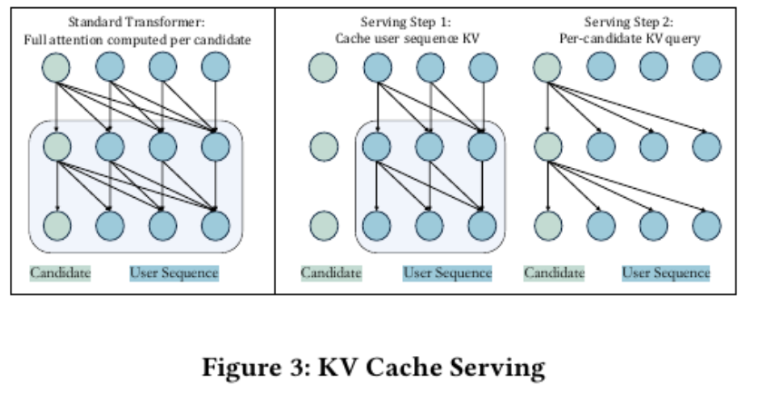
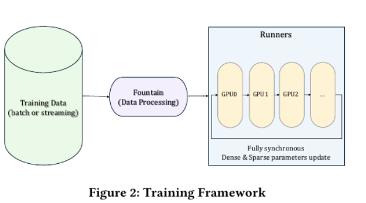
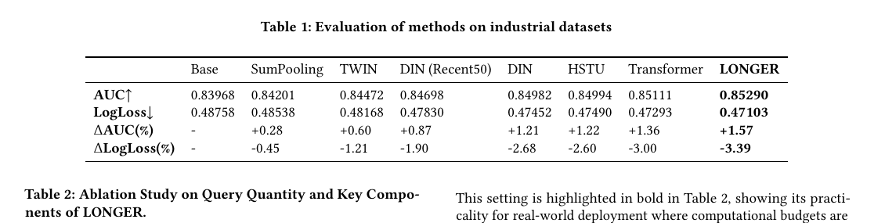
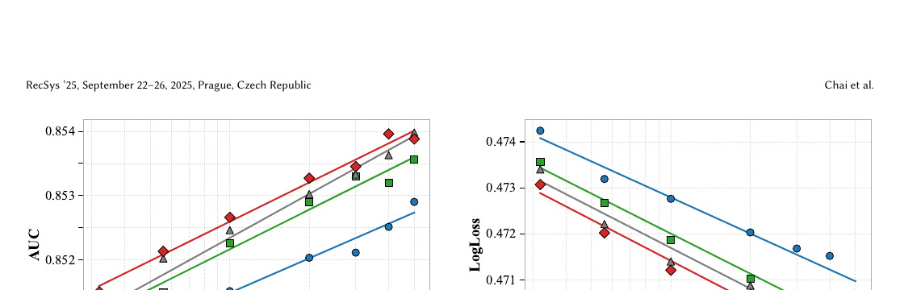
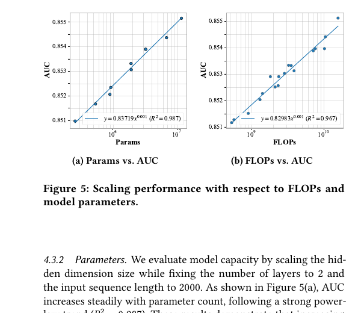
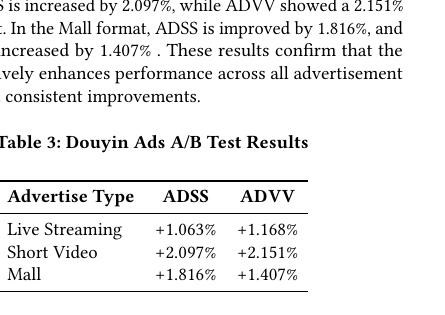
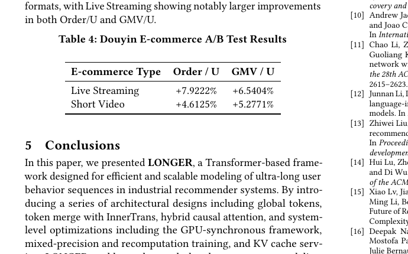

LONGER
1. 基本信息
- 标题：LONGER: Scaling Up Long Sequence Modeling in Industrial Recommenders
- 作者：Zheng Chai, Qin Ren, Xijun Xiao, Huizhi Yang, Bo Han, Sijun Zhang, Di Chen, Hui Lu, Wenlin Zhao, Lele Yu, Xionghang Xie, Shiru Ren, Xiang Sun, Yaocheng Tan, Peng Xu, Yuchao Zheng, Di Wu
- 机构：ByteDance
- 时间：2025-07-18（arXiv v2；RecSys 2025）
- 链接：https://arxiv.org/abs/2505.04421
- DOI：https://doi.org/10.1145/3705328.3748065
- 关键词：Long Sequence Modeling、Industrial Recommender、Transformer、KV Cache、Scaling Law
- pdf位置：
C:\Users\chaol\Desktop\推荐论文阅读\scaling\LONGER.pdf - 笔记位置：
论文笔记/精排/模型扩展/LONGER.md - 分类：精排 / 模型扩展
1.1 相关论文
- OneTrans：把 LONGER 这类“长行为序列 encoder + 系统优化”路线继续往前推，但不再停留在两阶段流水线，而是把序列与非序列特征放进统一 backbone。
- HyFormer：后续工作里明确保留了
LONGER-style Efficient Encoding这条高效长序列建模思路，但把 query-decoding 和 feature interaction 做成层间交替。
2. 一句话总结
这篇论文想解决的是：工业推荐里真正有价值的用户历史往往远超 10^3 长度，但直接上 vanilla Transformer 会被 O(L^2) 计算、显存和线上延迟拖垮。LONGER 的回答不是简单截断序列，而是把“全局锚点 token + token merge 压缩 + 首层 cross-attention / 后续 self-attention + GPU 侧训练/Serving 优化”打成一套系统，使长度到 10,000 的 end-to-end 长序列建模在工业环境里可训练、可部署、可扩展。
3. 论文在解决什么问题
3.1 为什么工业推荐里的长序列一直没被真正端到端建好
论文先回顾了三类主流方案：
- 两阶段召回/筛选：先从超长历史里挑 top-k，再对短序列做精排建模。
- 预训练用户向量：先在上游模型里把超长序列压成 user embedding，再给下游模型使用。
- memory-augmented 模型：把部分历史信息记忆化或缓存化，减少在线重算。
作者的判断是：这些方法都在“算得动”上做妥协，但代价是 上游与下游不一致，或者模型只能间接感知原始长历史。所以 LONGER 真正要做的是，把完整长序列直接放进主模型里，同时把训练和线上成本压到工业可接受范围。
3.2 Figure 1：LONGER 的整体架构不是单个模块，而是一条完整长序列处理流水线

Figure 1 里有四个连续阶段，最好按数据流理解：
- 输入层：底部既有用户 profile / context / cross feature，也有 candidate item feature，还有长行为序列。
- Token Merge + InnerTrans：长行为序列先按相邻 token 分组压缩，每组内部再用一个很轻的 Inner Transformer 补回局部交互。
- Cross Causal Attention：第一层只让一小组 query token 去读完整序列，先把“全局上下文 + 关键信号”提出来。
- Self Causal Attention × N：后续层只在压缩后的 query/token 序列上继续堆叠自注意力，抓高阶关系，最后接 MLP 做预测。
这张图最重要的不是“用了 Transformer”，而是它把 长序列压缩、重要信息抽取、后续高阶建模、线上缓存优化 设计成同一套结构，而不是若干松散技巧。
4. 方法总览
4.1 Global Tokens：先给长序列注意力一个稳定锚点
LONGER 会在原始行为序列前面拼一小组 Global Tokens，比如：
- target item 表示
- 用户 ID embedding
- 高阶 user-item 交互特征
- 可学习的 anchor token
作者给这组 token 的作用有两个：
- 聚合全局信息：这些 token 拥有完整感受野，可以把用户历史、上下文和候选 item 的信息先拉到统一位置。
- 稳定长序列注意力：论文借鉴了 attention sink 的观察，认为长上下文里模型容易把注意力塌到前部少数 token；加入全局锚点后，深层注意力更稳定。
我的理解是，LONGER 不是直接把超长历史全部丢给注意力再祈祷它自己学会聚焦，而是先显式放几个“全局读写头”，减少长序列注意力在训练早期发散。
4.2 Token Merge：先把长度压下来，再保住局部模式
长序列最大的硬成本是长度 L。论文的做法是把相邻 K 个 token 合成一个更短的序列，长度从 L 变成 L / K。
这里最容易误解的点是：它不是简单平均池化。LONGER 允许两种组内表示方式：
- 直接拼接组内 token；
- 先用
InnerTrans在组内做一轮轻量交互，再输出合并表示。
为什么这一步有效：
- 原始 Transformer 的高成本主要来自
L^2项。 - Merge 之后，序列长度缩短，后续 attention 的二次项立刻下降。
- 但每个 merged token 的宽度会变大，所以模型参数反而可能上升。
这也是论文一个很关键的观点：压序列长度不只是为了省 FLOPs，还给了模型把参数“挪到更有用的位置”的机会。
论文给了一个典型例子：L=2048, d=32 时，vanilla Transformer 约 587M FLOPs；K=4 merge 后约 336M FLOPs，下降 42.8%。
4.3 InnerTrans：为什么 merge 不会把细节直接糊掉
如果直接把相邻 K 个行为拼起来，组内 token 之间没有显式交互，容易丢掉局部顺序和细粒度行为模式。InnerTrans 就是为这个缺口补的一层很小的组内 Transformer：
这里输入还是同一组内的 K 个 token，只是交互范围被严格限制在组内，所以额外计算很小。
它保留了两个重要条件：
- 保留局部顺序信息：组内最近若干行为之间可以先互相作用。
- 不给全局复杂度添回去：因为组内
K很小，InnerTrans 的代价远小于全序列 attention。
所以 LONGER 的压缩不是“丢细节换效率”，而更像“先做小范围信息融合，再拿更短的序列做大范围建模”。
4.4 Hybrid Attention：为什么第一层是 cross-attention，后面才是 self-attention
LONGER 的主干不是每层都对完整长序列做 self-attention，而是分成两段：
- 第一层：
O = [G; H_S]作为 query，对完整输入R = [G; H]做 cross-causal attention。 - 后续层：只在第一层产出的压缩 token 上做 self-causal attention。
这里：
G是 global tokensH是完整行为序列H_S是从完整序列里采样出来的k个 query token，论文比较了 learnable / uniform / recent 等策略，最终 recent-k 最好
这个设计解决的是两个不同问题：
- 第一层 cross-attn：让少量 query 去“读”完整长历史，代替全量 token 两两交互。
- 后续 self-attn：只在已经压缩后的表示上建模高阶依赖，把算力花在更有信息密度的 token 上。
这一步的隐藏条件是：query 数 k 必须明显小于完整序列长度 L，否则首层 cross-attention 也会重新变重。实验里 k=100 已经接近 k=250 的效果，但 FLOPs 只要后者的约 54%，这正是这个结构成立的证据。
4.5 因果 mask 与 KV cache：为什么 LONGER 可以把用户序列缓存起来
这一块是论文最容易被一句话带过、但实际很关键的工程前提。
LONGER 想做 KV cache serving，前提是 用户序列侧的表示不能依赖候选 item 的内容，否则每换一个 candidate 都得整段重算。
论文通过两件事保证这一点：
- 把 attention 输入拆成用户序列 token 与 candidate 对应的 global token
- 用因果 mask 阻止序列 token 反向“看到”候选 token
于是成立的计算顺序是：
- 先只基于用户历史，预计算并缓存用户序列的
K/V - 每来一个 candidate，只让它自己的 global token 去查询缓存好的用户序列

Figure 3 左边是标准 Transformer：每个 candidate 都要把整段全量 attention 再算一遍。右边是 LONGER 的两步式 serving：先缓存 user sequence KV，再做 per-candidate query。
论文报告这一改动把线上吞吐退化从最高 -40% 压到 -6.8%。这说明 LONGER 不是只在离线把模型搭起来，而是把 attention 结构主动设计成可缓存的形式。
4.6 Figure 2：训练框架本身也是方法的一部分

Figure 2 展示的不是模型结构，而是训练/参数系统：
- 数据经过
Fountain预处理后送到多个 GPU runners。 - dense 与 sparse 参数都在 GPU 侧同步更新，而不是外接 Parameter Server。
- 稀疏 embedding 采用分层存储：高频在 HBM，中频在 CPU 内存，低频在 SSD。
这张图想说明的是：LONGER 的工业可行性并不只来自模型 FLOPs 降了，而是 训练架构、参数存储、同步更新方式 一起为了 GPU 友好而重构。
4.7 Mixed Precision + Recompute：为什么大模型训练还能压住显存
为了让长序列模型真的训得起来，论文还用了两项标准但必要的策略：
- Recompute：前向时丢弃部分中间激活，反向再重算，换计算省显存。
- BF16/FP16 mixed precision：关键模块保高精度，其它模块降精度。
论文给出的线上训练收益是平均：
+18%throughput-16%training time-18%memory usage- dense 层里最高
-28%memory reduction
这部分没有新算法味道，但它解释了为什么论文能把 10,000 长序列和工业级 sparse/dense 混合模型同时放进实际 GPU 集群里。
5. 实验与结果
5.1 Table 1：LONGER 不是只比短序列方法强，也超过了 vanilla Transformer / HSTU

Table 1 的关键信息有三层：
- 比传统短序列方法强：相对 Base，LONGER 的
AUC +1.57%、LogLoss -3.39%。 - 比长序列基线也强：优于
DIN、HSTU和 vanillaTransformer。 - 工业上是显著增益：论文专门强调，在这类场景里
0.1%的提升就可能在线上很有意义。
最该记的对比是和 vanilla Transformer：
- Transformer：
AUC 0.85111，LogLoss 0.47293 - LONGER：
AUC 0.85290，LogLoss 0.47103
也就是说，LONGER 不是靠“做小模型换速度”，而是在更高效的同时把效果也抬上去了。
5.2 Table 2：最好用的不是“保留最多 query”，而是“保留足够多且最有信息的 query”

Table 2 主要验证了三件事：
- TokenMerge 本身就有效：
w/o Merge到TokenMerge8(Concat, 250)，FLOPs 从3.73e9降到3.03e9，AUC 反而从0.85111升到0.85291。 - InnerTrans 继续补收益：加上后达到
AUC 0.85332、LogLoss 0.47052，是整表最好结果。 - Recent query 选择最关键：
Recent 100明显优于Learnable 100和Uniform 100。
这里最值得记的部署结论是：
Query number = 100时，AUC 0.85290Query number = 250时，AUC 0.85332
二者差距非常小，但前者只需要后者约 54% 的 FLOPs。作者因此把 recent 100 视为真实部署里最实用的折中点。
5.3 Figure 4：更长序列确实持续有用，但深度收益会递减

Figure 4 看的是 sequence length scaling：
- 序列从
300 -> 1k -> 5k变长时，AUC 持续上升，LogLoss 持续下降。 - 更深的层数通常能更好吃到长序列收益。
- 但随深度继续增加，边际收益会变小。
这说明论文的核心 claim 不是“只要把序列拉长就行”，而是：更长历史有价值，但前提是 backbone 的计算形式能承受它，且模型深度需要和长度一起选。
5.4 Figure 5：参数和 FLOPs 都呈现比较干净的 power-law 关系

Figure 5 给的是这篇论文标题里 Scaling Up 最直接的证据：
- Params vs. AUC：固定层数和长度，增大 hidden size，AUC 持续上升，
R^2 = 0.987。 - FLOPs vs. AUC：固定宽度，通过增加层数和序列长度扩大计算量，AUC 也持续上升，
R^2 = 0.967。
我的理解是，这部分其实在回答一个更大的问题：工业推荐能不能像 LLM 一样谈 scaling law？LONGER 的答案是可以，但前提是模型结构和系统实现得先适合 GPU 与长序列。
5.5 在线 A/B：离线涨点不是“纸面提升”

广告场景里：
- Live Streaming：
ADSS +1.063%，ADVV +1.168% - Short Video：
ADSS +2.097%，ADVV +2.151% - Mall：
ADSS +1.816%，ADVV +1.407%

电商场景里：
- Live Streaming：
Order/U +7.9222%，GMV/U +6.5404% - Short Video：
Order/U +4.6125%，GMV/U +5.2771%
这部分很重要，因为它说明 LONGER 的收益不是只在离线亿级样本上成立，而是能跨广告和电商两个系统生效。尤其电商里的提升幅度相当大，说明长历史对高价值决策任务的帮助更明显。
6. 理解、启发与局限
6.1 这篇论文最值钱的地方
我觉得 LONGER 真正有价值的不是某个单点模块，而是它把工业长序列问题拆成了三层：
- 表示层：用 global tokens 和 recent queries 把“全局信息 + 关键局部行为”先抽出来。
- 计算层：用 token merge + InnerTrans 把注意力复杂度降下来。
- 系统层：用 mixed precision、recompute、KV cache、GPU 同步训练把模型真正落到线上。
很多论文只解决第一层或第二层，但 LONGER 把三层一起打通了，所以才有工业说服力。
6.2 这套方法成立的前提
它并不是无条件通用，至少依赖几个前提：
- 用户序列有明显时序结构，recent 行为比 uniform 抽样更有信息。
- 局部相邻行为可以被 merge，否则 token merge 会伤到关键细节。
- 候选 item 与用户历史的交互可以改写成“candidate query 用户缓存 KV”，这样 KV cache 才成立。
- 系统侧确实有 GPU 主导的训练/Serving 基础设施，否则很多工程优化吃不到收益。
6.3 它没有彻底解决什么
LONGER 仍然是“先压长序列，再在压缩表示上做深层建模”的思路，因此：
- query 的选择策略依旧很关键，选不好会直接损伤效果。
- token merge 虽然更温和，但本质上仍然在做信息压缩，不可能完全无损。
- 这篇论文主要处理的是 长用户行为序列，还没有像 OneTrans / HyFormer 那样，把异构 non-seq feature interaction 一并统一进主干。
7. 结论 / 记忆点
以后回看这篇论文，我会优先记这几件事：
- LONGER 的核心不是“更长的 Transformer”，而是为工业长序列重写了一套可部署的 Transformer 流水线。
Global Tokens + recent query负责先抓重点，Token Merge + InnerTrans负责把长度压下来但不直接丢局部模式。- 首层 cross-attention、后续 self-attention 是它兼顾效率与表达力的关键结构。
- KV cache 能成立，是因为 attention 方向被专门设计成 candidate 读 user，而不是 user 反过来依赖 candidate。
- 论文给出的最实用部署结论不是“query 越多越好”，而是
recent 100已经非常接近更大 query 数的效果。 - 它证明了工业推荐里的长序列建模也能出现比较稳定的 scaling law，但前提是模型结构和系统实现要一起为 GPU/长上下文优化。